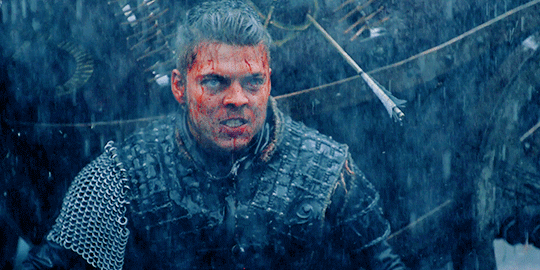

Acerca de Björn Ragnarsson
Historia Personal
Desde mi infancia, he estado rodeado de mi familia legendaria, encabezada por mi padre, Ragnar Lodbrok, una figura imponente y carismática cuyas hazañas han sido cantadas en toda Escandinavia. Entre mis hermanos, destaca Ivar, conocido como Ivar el Deshuesado, cuyo destino estaba entrelazado con el mío desde el principio.


Logros y Hazañas
- Unificación de Kattegat: siguiendo los pasos de mi padre, Ragnar Lothbrok, lideré el reino de Kattegat con sabiduría y determinación. Después de la partida de mi padre, asumí el papel de rey y trabajé incansablemente para unificar y fortalecer nuestro reino bajo una sola bandera.
- He participado en innumerables batallas que han moldeado el destino de Kattegat y más allá. Desde enfrentamientos contra los sajones en Inglaterra hasta la defensa de nuestro hogar contra los francos